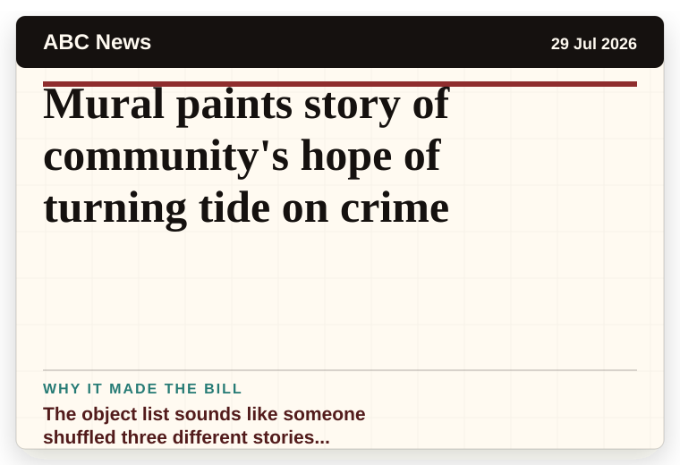
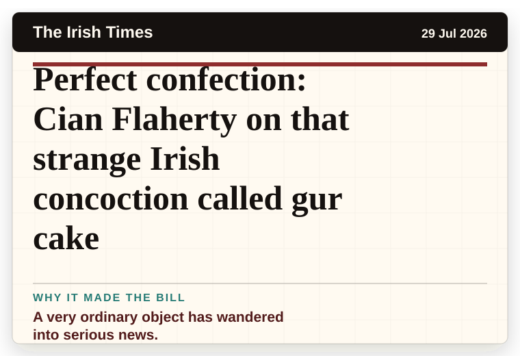
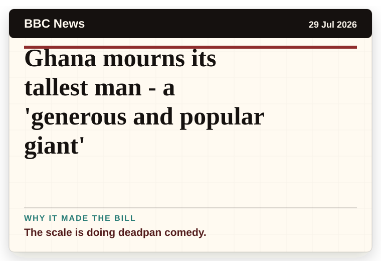
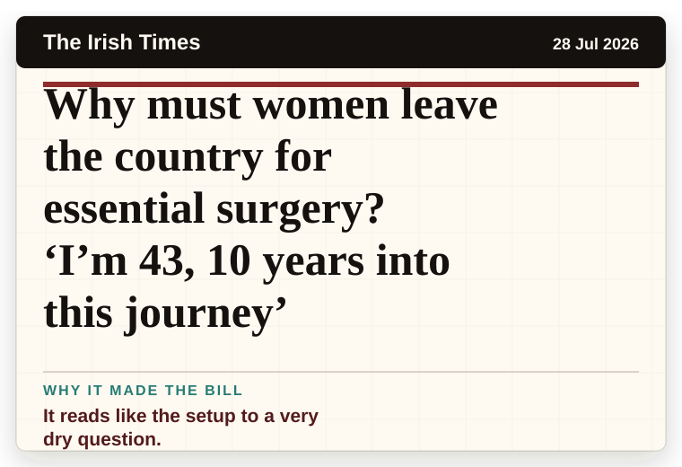
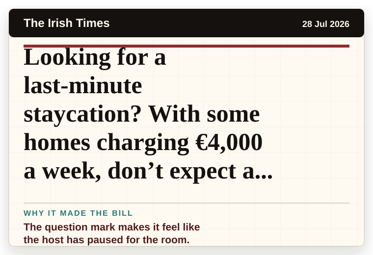

Daily Star Weird News
United Kingdom
Man caught on CCTV using bus stop as toilet for months is ordered to pay £2,070
A household object has somehow reached the news desk.
The latest daily picks, linked back to the original sources. Search the room, pick a source, or follow a headline out to the full story.
Record updated: 29 Jul 2026, 07:53 AM AEST
Showing 12 headline candidates from the refresh run completed on 29 Jul 2026, 07:53 AM AEST.
A household object has somehow reached the news desk.

The headline is already trying not to laugh.

The headline is already trying not to laugh.

It has the shape of a tiny adventure reported with a straight face.

It has the shape of a tiny adventure reported with a straight face.

A wonderfully specific detail has taken centre stage.

A wonderfully specific detail has taken centre stage.

The object list sounds like someone shuffled three different stories together.

A very ordinary object has wandered into serious news.

The scale is doing deadpan comedy.

It reads like the setup to a very dry question.

The question mark makes it feel like the host has paused for the room.